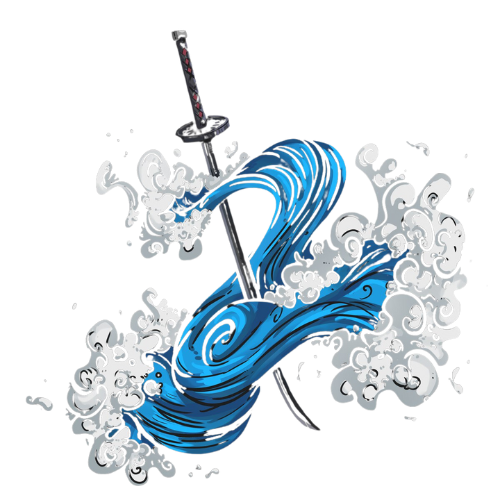

Welcome to PSOTS
Welcome to our website, where you can explore the captivating world of Demon Slayer. Dive into the intricate details of your favorite characters and their powerful breathing techniques. Each character in Demon Slayer has a unique style of combat, centered around specialized breathing forms that enhance their strength and abilities. Whether you're a new fan or a seasoned follower, this is the perfect place to deepen your knowledge and appreciation of the Demon Slayer universe.
Tanjiro Kamado
Tanjiro Kamado (竈門かまど 炭たん治じ郎ろう) is the main protagonist of Demon Slayer: Kimetsu no Yaiba. He is a Demon Slayer in the Demon Slayer Corps who joined to find a remedy to turn his sister, Nezuko Kamado, back into a human and to hunt down and kill demons, and later swore to defeat Muzan Kibutsuji, the King of Demons, in order to prevent others from suffering the same fate as him. Before he became a Demon Slayer, Tanjiro was a coal burner before his family was slaughtered by Muzan, while his younger sister, Nezuko, was turned into a demon
.png)
Water Breathing
Hinokami Kagura

Kyojuro Rengoku:
Kyojuro Rengoku (煉獄 杏寿郎 Rengoku Kyōjurō?) was a major supporting character of Demon Slayer: Kimetsu no Yaiba and a major character in the Mugen Train Arc. He was a Demon Slayer of the Demon Slayer Corps and the late Flame Hashira (炎柱 En Bashira?).
Sanemi Shinazugawa:
Sanemi Shinazugawa (不死川 実弥 Shinazugawa Sanemi?) is a major supporting character of Demon Slayer: Kimetsu no Yaiba. He is a Demon Slayer of the Demon Slayer Corps and the current Wind Hashira (風柱 Kaze Bashira?)
Giyuu Tomioka:
Giyuu Tomioka (冨岡 義勇 Tomioka Giyū?) is a major supporting character of Demon Slayer: Kimetsu no Yaiba. He is a Demon Slayer of the Demon Slayer Corps and the current Water Hashira (水柱 Mizu Bashira?)
Gyomei Himejima:
Gyomei Himejima (悲鳴嶼 行冥 Himejima Gyōmei?) is a major supporting character of Demon Slayer: Kimetsu no Yaiba. He is a Demon Slayer of the Demon Slayer Corps and the current Stone Hashira (岩柱 Iwa Bashira?)
Obanai Iguro:
Obanai Iguro (伊黒 小芭内 Iguro Obanai?) is a major supporting character of Demon Slayer: Kimetsu no Yaiba. He is a Demon Slayer of the Demon Slayer Corps and the current Serpent Hashira (蛇柱 Hebi Bashira?)
Muichiro Tokito:
Muichiro Tokito (時とき透とう 無む一いち郎ろう Tokitō Muichirō?) is a major supporting character of Demon Slayer: Kimetsu no Yaiba. He is a Demon Slayer of the Demon Slayer Corps and the current Mist Hashira (霞かすみ柱ばしら Kasumi Bashira?)
Shinobu Kocho:
Shinobu Kocho (胡こ蝶ちょう しのぶ Kochō Shinobu?) is a major supporting character of Demon Slayer: Kimetsu no Yaiba. She is a Demon Slayer of the Demon Slayer Corps and the current Insect Hashira (蟲むし柱ばしら Mushi Bashira?)
Mitsuri Kanroji:
Mitsuri Kanroji (甘かん露ろ寺じ 蜜みつ璃り Kanroji Mitsuri?) is a major supporting character of Demon Slayer: Kimetsu no Yaiba. She is a Demon Slayer of the Demon Slayer Corps and the current Love Hashira (恋こい柱ばしら Koi Bashira?)
Kanae Kocho:
Kanae Kocho (胡こ蝶ちょう カナエ Kochō Kanae?) was a minor character in Demon Slayer: Kimetsu no Yaiba. She was a Demon Slayer and the late Flower Hashira (花はな柱ばしら Hana Bashira?).